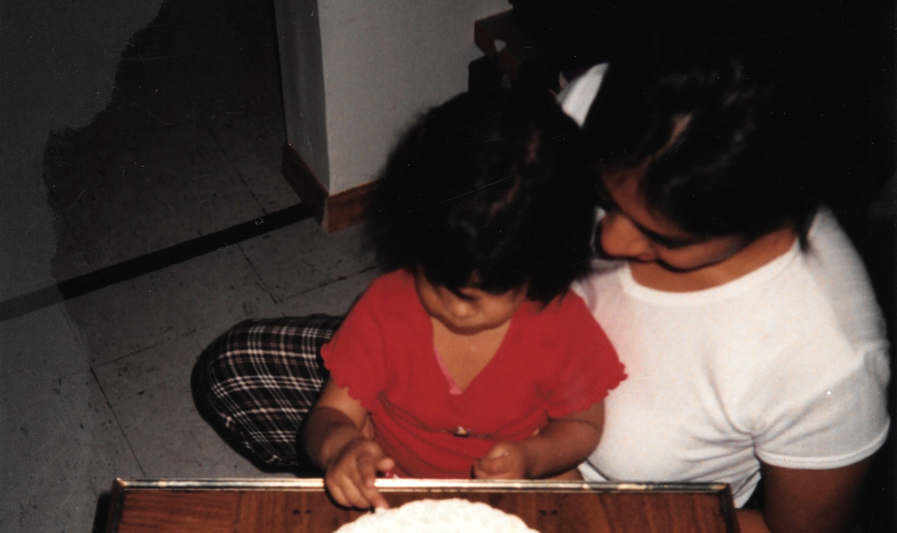
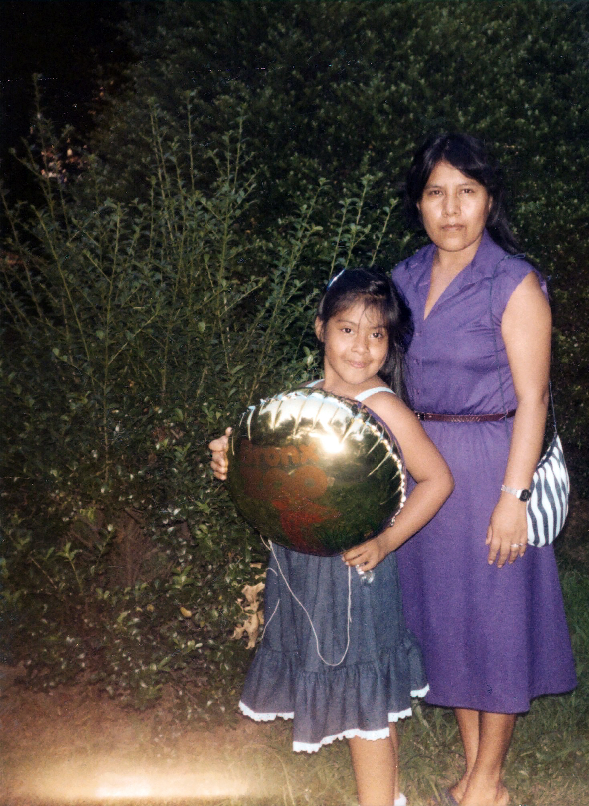
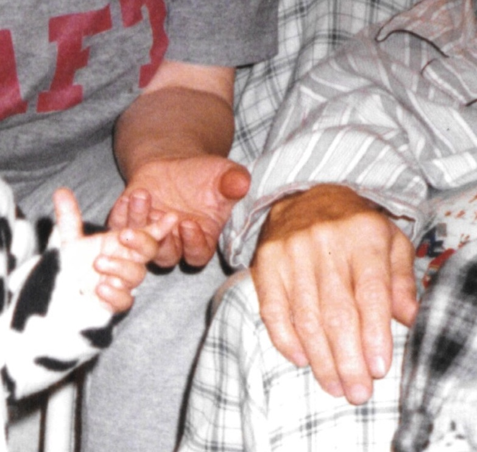
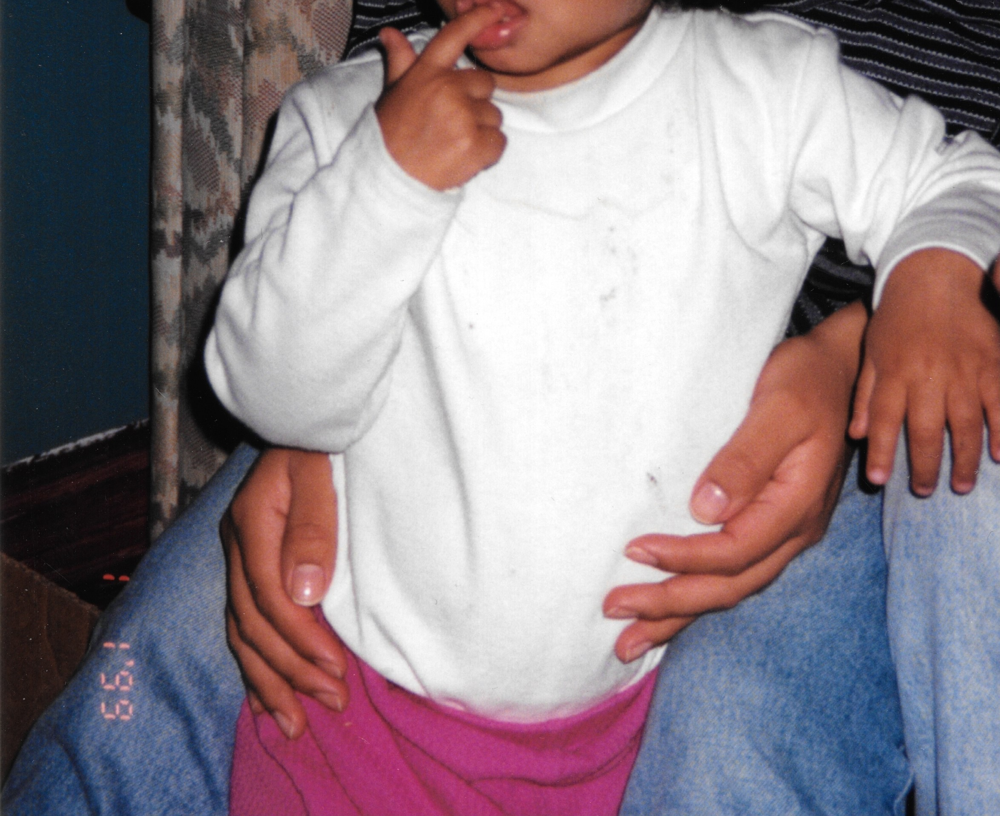
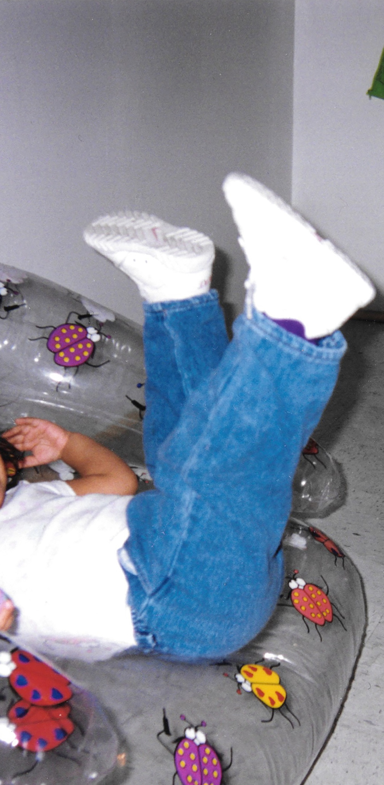
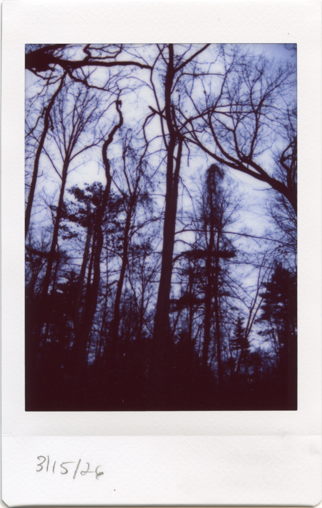
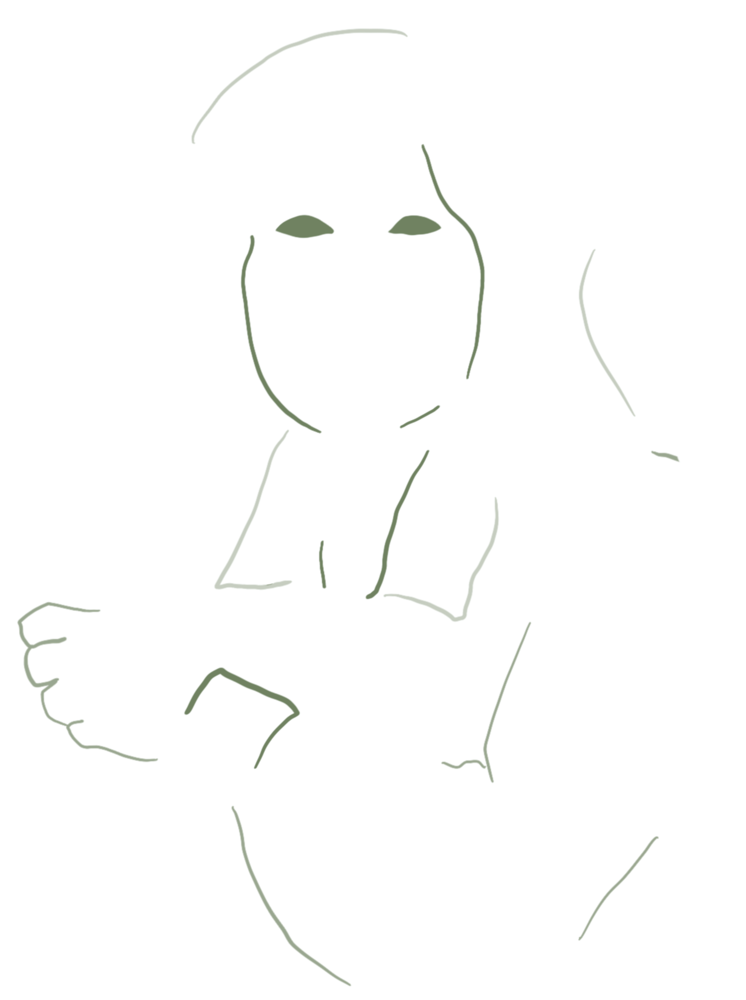
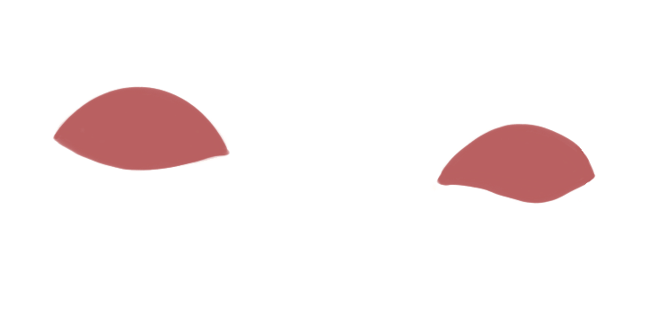

...My family tree is found in the base of my spine
Where generations of strength, survival and toil have made it strong
And in the shape of my smile lines
Beginning to make its etches onto my skin
It's found in my mother's too;
Sometimes scars are not only left from pain...









